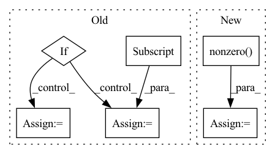

Pattern ID :22291

Before Change
adj = adj.T
if isinstance(adj, Tensor):
return dense_to_sparse(adj)
else:
idxs = np.nonzero(adj)
edge_index = np.stack(idxs)
edge_weights = adj[idxs]
return edge_index, edge_weights
def edge_index_to_adj(edge_index: TensArray,
After Change
if backend is torch:
adj = torch.transpose(adj, -2, -1)
index = adj.nonzero(as_tuple=True)
else:
adj = np.swapaxes(adj, -2, -1) // transpose
index = adj.nonzero()
In pattern: SUPERPATTERN
Frequency: 3
Non-data size: 6
Instances
Fragment ID: 70246371
Project Name: torchspatiotemporal/tsl
Commit Name: f28e5a2fddc34eeb90a13c113512c8ab12b6138b
Time: 2022-07-20
Author: ivan.marisca@hotmail.it
File Name: tsl/ops/connectivity.py
M Class Name: AnonimousClass
N Class Name: AnonimousClass
M Method Name: adj_to_edge_index(2)
N Method Name: adj_to_edge_index(1)
M Parent Class:
N Parent Class:
M File Name: tsl/ops/connectivity.py
N File Name: tsl/ops/connectivity.py
M Start Line: 92
M End Line: 114
N Start Line: 106
N End Line: 145
'>
Before Change
M[0:2, :], (input_res * 2, input_res * 2),
flags=cv2.INTER_CUBIC)
if det is not None:
// detection for bbox
bbox = get_bbox(img_for_crop, det)
width = bbox[2] - bbox[0]
height = bbox[3] - bbox[1]
center = np.array([(bbox[0] + bbox[2]) / 2.0,
(bbox[1] + bbox[3]) / 2.0])
else:
// Assume that the person is centerered in the image
height = img_for_crop.shape[0]
width = img_for_crop.shape[1]
center = np.array([width // 2, height // 2])
scale = max(height, width) / 180
After Change
detector.eval()
predictions = detector(
[torch.from_numpy(img_for_crop).permute(2, 0, 1) / 255.])[0]
human_ids = torch.logical_and(
predictions["labels"] == 1,
predictions["scores"] == predictions["scores"].max()).nonzero().squeeze(1)
bbox = predictions["boxes"][human_ids, :].flatten().detach().cpu().numpy()
width = bbox[2] - bbox[0]
'>
Fragment ID: 70246366
Project Name: yuliangxiu/icon
Commit Name: 2117636e701293c457554812067b272fcf3f8252
Time: 2022-10-10
Author: yuliang.xiu@tuebingen.mpg.de
File Name: lib/pymaf/utils/imutils.py
M Class Name: AnonimousClass
N Class Name: AnonimousClass
M Method Name: process_image(5)
N Method Name: process_image(6)
M Parent Class:
N Parent Class:
M File Name: lib/pymaf/utils/imutils.py
N File Name: lib/pymaf/utils/imutils.py
M Start Line: 91
M End Line: 132
N Start Line: 111
N End Line: 128
'>
Before Change
adj = adj.T
if isinstance(adj, Tensor):
return dense_to_sparse(adj)
else:
idxs = np.nonzero(adj)
edge_index = np.stack(idxs)
edge_weights = adj[idxs]
return edge_index, edge_weights
def edge_index_to_adj(edge_index: TensArray,
After Change
index = adj.nonzero(as_tuple=True)
else:
adj = np.swapaxes(adj, -2, -1) // transpose
index = adj.nonzero()
edge_attr = adj[index]
if len(index) == 3:
'>
Fragment ID: 70246370
Project Name: torchspatiotemporal/tsl
Commit Name: 50089afdf23de12eb6d11e9d5e7e64d949d45611
Time: 2022-08-18
Author: ivan.marisca@hotmail.it
File Name: tsl/ops/connectivity.py
M Class Name: AnonimousClass
N Class Name: AnonimousClass
M Method Name: adj_to_edge_index(2)
N Method Name: adj_to_edge_index(1)
M Parent Class:
N Parent Class:
M File Name: tsl/ops/connectivity.py
N File Name: tsl/ops/connectivity.py
M Start Line: 92
M End Line: 114
N Start Line: 106
N End Line: 145